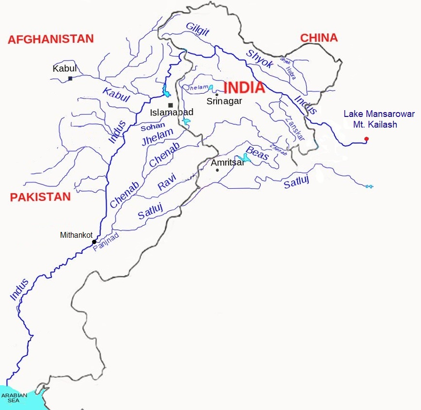
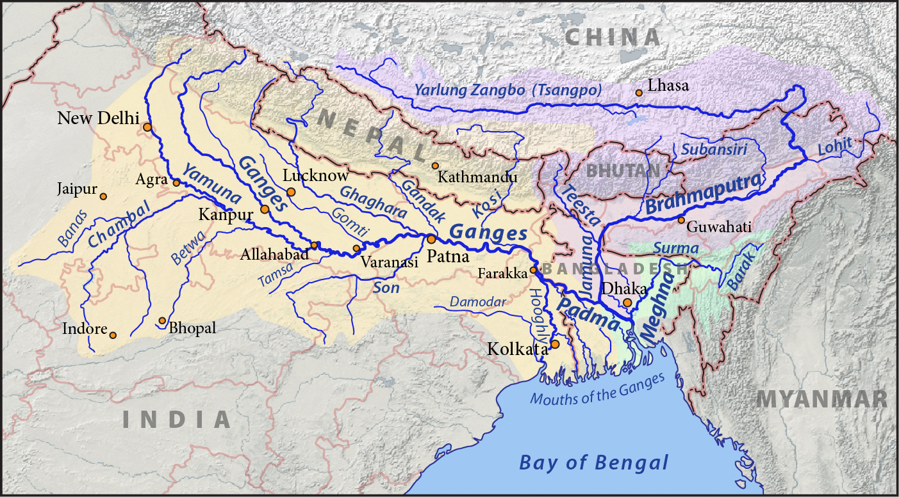
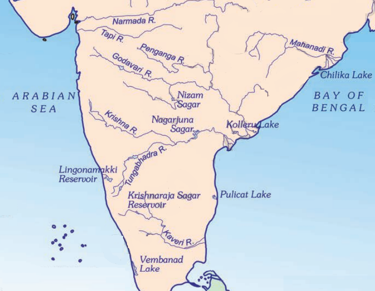

Drainage System of India
The flow of water through well-defined channels is known as
‘drainage’ and the network of such channels is called a
‘drainage system’. An area drained by a river and its
tributaries is called a drainage basin. The drainage
pattern of an area is the outcome of the geological time period,
nature and structure of rocks, topography, slope, amount of
water flowing and the periodicity of the flow.
Drainage Patterns
The streams within a drainage basin form certain patterns,
depending on the slope of land, underlying rock structure as
well as the climatic conditions of the area. These are:
-
Dendritic Drainage Pattern: The dendritic pattern
develops where the river channel follows the slope of the
terrain. The stream with its tributaries resembles the
branches of a tree, thus the name dendritic.
-
Trellis Drainage Pattern: A river joined by its
tributaries, at approximately right angles, develops a trellis
pattern.
-
Centripetal Drainage Pattern: When the rivers
discharge their waters from all directions in a lake or
depression, the pattern is know as ‘centripetal’.
-
Rectangular drainage pattern: Rectangular drainage
develops on rocks that are of approximately uniform resistance
to erosion, but which have two directions of jointing at
approximately right angles or 90 degrees.
-
Radial Drainage Pattern: When the rivers originate
from a hill and flow in all directions, the drainage pattern
is known as ‘radial’. The rivers originating from the
Amarkantak range present a good example of it.
Drainage Systems in India
On the basis of the mode of origin, nature and characteristics,
the Indian drainage may be classified into:
- Himalayan drainage or Himalayan River Systems;
- Peninsular drainage or Peninsular River Systems.
|
Comparison between the Himalayan and the Peninsular
Rivers
|
| Aspects |
Himalayan Rivers |
Peninsular Rivers |
| Place of origin |
Himalayan mountain covered with glaciers. |
Peninsular plateau. |
| Nature of flow |
Perennial; receive water from glacier and rainfall.
|
Seasonal; dependent on monsoon rainfall |
| Type of drainage |
Forms dendritic pattern. |
Forms trellis, radial and rectangular patterns. |
| Nature of river |
Long course, flowing through the rugged mountains
experiencing headward erosion and river capturing; In
plains meandering and shifting of course
|
Smaller, fixed course with well-adjusted valleys |
| Drainage Basins |
Very large basins |
Relatively smaller basin |
| Age of the river |
Young and youthful, active and deepening in the valleys
|
Old rivers with graded profile, and have almost reached
their base levels
|
The Himalayan Rivers
The major Himalayan rivers are the Indus, the Ganga and the
Brahmaputra. These rivers are long, and are joined by many large
and important tributaries. A river alongwith its tributaries is
called a river system.
The Indus River System

-
With a total length of 2,880 km (in India 1,114 km), the Indus
is one of the longest rivers of the world. A little over a
third of the Indus basin is located in India and the rest is
in Pakistan.
-
It rises in Tibet, near Lake Mansarowar at an altitude of
4,164 m in the Kailash Mountain range. The Indus then flows
northwest through Ladakh, India, wher it forms the first major
tributary, the Zanskar River. Other important tributaries of
Indus in Ladakh include Nubra, the Shyok etc. It then flows
into Gilgit, just south of the Karakoram range.
-
The Kabul River joins it near Attock. The remainder of its
route to the sea is in the plains of the Punjab and Sindh,
where the flow of the river becomes slow and highly braided.
-
It joins the Panjnad, a river formed by the confluence of the
Satluj, the Beas, the Ravi, the Chenab and the Jhelum, near
Mithankot in Pakistan. Beyond this, the Indus flows southwards
eventually reaching the Arabian Sea, east of Karachi.
According to the regulations of the
Indus Water Treaty (1960), India can use only 20 per cent
of the total water carried by the Indus river system. This water
is used for irrigation in Punjab, Haryana and the southern and
the western parts of Rajasthan.
The Ganga River System
-
River Ganga has a length of 2,525 km. It is shared by
Uttarakhand (110 km), Uttar Pradesh (1,450 km), Bihar (445 km)
and West Bengal (520 km).
-
It rises in the Gangotri glacier at Gaumukh ( at an elevation
of 4,356 m) in the Uttarkashi district of Uttarakhand. Here,
it is known as the Bhagirathi. At Devprayag, the Bhagirathi
meets the Alaknanda; hereafter, it is known as the Ganga.
-
After flowing for 250 km through its narrow Himalayan valley,
the Ganges emerges from the mountains at Rishikesh onto the
Gangetic Plain at the pilgrimage town of Haridwar.
-
The Ganga is joined by many tributaries from the Himalayas, a
few of them being major rivers, such as the Yamuna, the
Ghaghara, the Gandak and the Kosi.
-
River Yamuna rises from the Yamunotri Glacier in the
Himalayas. It flows parallel to the Ganga and as a right
bank tributary meets the Ganga at Prayag (Allahabad).
-
The Ghaghara, the Gandak and the Kosi rise in the Nepal
Himalaya. They are the rivers, which flood parts of the
northern plains every year, causing widespread damage to
life and property, and also, they enrich the soil for
agricultural use.
-
The main tributaries, which come from the peninsular uplands,
are the Chambal, the Betwa and the Son. These rise from
semi-arid areas, have shorter courses and do not carry much
water in them.
-
Enlarged with the waters from its right and left bank
tributaries, the Ganga flows eastwards till Farakka in West
Bengal. The river bifurcates here;
-
the Bhagirathi-Hooghly, which goes on to become the Hooghly
River and flows southwards through the deltaic plains to the
Bay of Bengal.
-
the mainstream, flows southwards into Bangladesh where it is
called Padma. The Padma is joined by the Jamuna River, the
largest distributary of the Brahmaputra. Further downstream,
it is known as the Meghna. This mighty river, with waters
from the Ganga and the Brahmaputra, flows into the Bay of
Bengal. The delta formed by these rivers is known as the
Sundarban Delta which derives its name from the Sundari
tree, which grows well in marshland. It is the home of Royal
Bengal tiger.

The Brahmaputra River System
-
The Brahmaputra, one of the largest rivers of the world (3,969
km), has its origin in the Chemayungdung glacier of the
Kailash range near the Mansarovar lake (very close to the
sources of the Indus and the Satluj). From here, it traverses
eastward longitudinally for a distance of nearly 1,200 km in a
dry and flat region of southern Tibet, where it is known as
the Tsangpo, which means ‘the purifier.’
-
On reaching the Namcha Barwa (7757 m), it takes a ‘U’ turn and
enters India in Arunachal Pradesh through a gorge. Here, it is
called the Dihang and it is joined by the Dibang, the Lohit,
and many other tributaries; thereafter, it is known as the
Brahmaputra. It then enters the state of Assam.
-
The Brahmaputra receives numerous tributaries in its 750 km
long journey through the Assam valley. In Bangladesh, the
Teesta joins it on its right bank from where the river is
known as the Jamuna. It finally merges with the lower Ganga,
called the Padma River, which flows into the Bay of Bengal.
-
The Brahmaputra is well-known for floods, channel shifting and
bank erosion. This is due to the fact that most of its
tributaries are large, and bring large quantity of sediments
owing to heavy rainfall.
The Peninsular Rivers
The drainage basins of the peninsular rivers are comparatively
smaller in size. They are classified based on their direction of
flow:
-
Most of the major rivers of the Peninsula, such as the
Mahanadi, the Godavari, the Krishna and the Kaveri flow
eastwards and drain into the Bay of Bengal. These rivers make
deltas at their mouths.
-
There are numerous small streams flowing west of the Western
Ghats. The main west flowing rivers are Sabarmati, Mahi,
Bharathpuzha and Periyar. The Narmada and the Tapi are the
only long rivers, which flow west and make esturies.

| River |
Origin |
Length
(Km) |
States |
Important
Tributaries
|
| Narmada |
Amarkantak hills,
Madhya Pradesh |
1,312 |
Madhya Pradesh and Gujarat. |
- |
| Tapi |
Satpura ranges,
Betul district (MP) |
700 |
Madhya Pradesh, Gujarat and Maharashtra. |
- |
Godavari
(Dakshina Ganga) |
Western Ghats,
Nasik district, Maharashtra
|
1500 |
Maharashtra (>50%), Madhya Pradesh, Odisha and Andhra
Pradesh.
|
Purna, Wardha, Pranhita, Manjra, Wainganga and Penganga.
|
| Mahanadi |
Highlands of Chhattisgarh |
860 |
Maharashtra, Chhattisgarh, Jharkhand, and Odisha. |
- |
| Krishna |
Mahabaleshwar |
1400 |
Maharasthra, Karnataka and Andhra Pradesh. |
Tungabhadra, Koyana, Ghatprabha, Musi and Bhima |
| Kaveri |
Brahmagri range,
Western Ghats |
760 |
Karnataka, Kerala and Tamil Nadu |
Amravati, Bhavani, Hemavati and Kabini |
Lakes
India has many lakes. These differ from each other in size and
other characteristics. Most lakes are permanent; some contain
water only during the rainy season, like the lakes in the basins
of inland drainage of semi-arid regions. There are some lakes
which are the result of the action of glaciers and ice sheets,
while others have been formed by wind, river action and human
activities.
Most of the freshwater lakes are in the Himalayan region. They
are formed when glaciers dug out a basin, which was later filled
with snowmelt. The Wular lake in Jammu and Kashmir, in contrast,
is the result of tectonic activity. It is the largest freshwater
lake in India. The Dal lake, Bhimtal, Nainital, Loktak and
Barapani are some other important freshwater lakes.
Lakes in the region of inland drainage are sometimes seasonal;
for example, the Sambhar lake in Rajasthan, which is a salt
water lake. Its water is used for producing salt.
Apart from natural lakes, the damming of the rivers for the
generation of hydel power has also led to the formation of
lakes, such as Guru Gobind Sagar (Bhakra Nangal Project).
Lakes are of great value to human beings. A lake helps to
regulate the flow of a river. During heavy rains, it prevents
flooding and during the dry season, it helps to maintain an even
flow of water. Lakes can also be used for developing hydel
power. They moderate the climate of the surroundings; maintain
the aquatic ecosystem, enhance natural beauty, help develop
tourism and provide recreation.